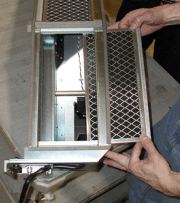

Operating Documentation
Direction 5112972-800, Rev# 2
CT Planned Maintenance Procedures
Operating Documentation |
| Required Persons | Preliminary Reqs | Procedure | Finalization |
|---|---|---|---|
| 1 | Timing Not Applicable | 15 mins | Timing Not Applicable |
Procedure Effectivity:
| Assembly: | GANTRY |
| Subassembly: | SDAS |
| Purpose: | Clean or replace the DAS/DUCT Fan Filters |
| Last Revised: | October 2003 |
| NOTE: | This procedure is necessary to Maintain the cooling capacity of the SDAS. |
| Item | Qty | Effectivity | Part# | Manufacturer | |
|---|---|---|---|---|---|
| HEPA Vacuum cleaner | 1 | - | 46-297933P1 | - | |
| Standard FE Toolkit | 1 | - | - | - | |
Move the table to the lowest elevation.
| POTENTIAL FOR SHOCK. | |
| VOLTAGE MAY BE PRESENT. | |
| Use proper lockout/tagout procedures. |
Turn off the facility power to PDU.
Remove the Gantry side covers.
Lift off the top cover.
Remove the "scan" window.
Remove the front cover.
Rotate the Gantry until the DAS/DUCT Fan assembly is within serviceable reach.
Engage the rotational lock. See Illustration 1.
Illustration 1: Rotational Lock

Disconnect the fan harness.
| POTENTIAL FOR EQUIPMENT DAMAGE. USING VACUUM HOSE NEAR LIVE ELECTRONIC EQUIPMENT MAY CAUSE EQUIPMENT DAMAGE DUE TO STATIC. MAKE SURE EQUIPMENT IS TURNED OFF PRIOR TO VACUUMING NEAR ELECTRONIC EQUIPMENT. | |
Vacuum the dust from fan "finger" guards.
Remove the filters from duct and vacuum dust from each filter. It is normal for the right chassis filter to be more dusty. See Illustration 2.
| NOTE: | There are three filters in the DAS plenum. |
Illustration 2: DAS Plenum Removal

Inspect the duct for dust, remove it, and clean it, if necessary.
Replace the filter. Note the DIRECTION OF AIRFLOW stamped on filter frame. Filter foam faces towards the fan).
Restore the fan harness connection.
Reassemble the Gantry covers and the scan window.
Restore the power.
No finalization required.